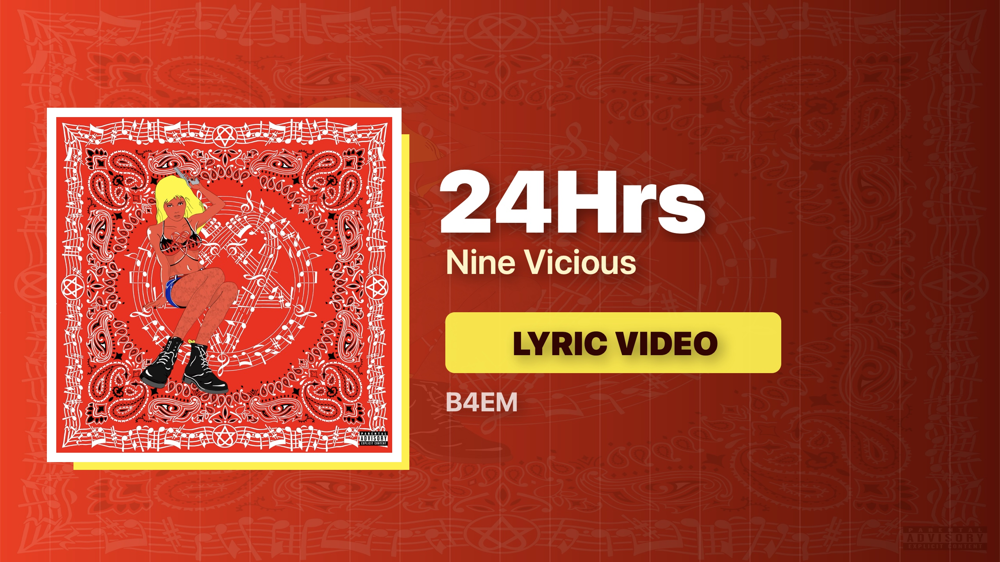

Track-led YouTube SEO
24Hrs by Nine Vicious for late-night vibe coding.
A track-led entry into the Late Night Vibe Coding Visuals playlist: lyric-video energy for AI builder sessions, prompt loops, and deep focus when you want a screen companion.

24Hrs - Nine Vicious Watch inside the full playlistWhy it fits Late Night Vibe Coding Visuals.
24Hrs works as a high-signal entry point for people searching by track name or artist name. Instead of sending that intent to one isolated video, this page routes it into a playlist journey built for coding visuals, AI work, and late-night focus.
Watch the full YouTube playlist.
Start with 24Hrs, then keep the full visual music queue running while you code, prompt, debug, or build.